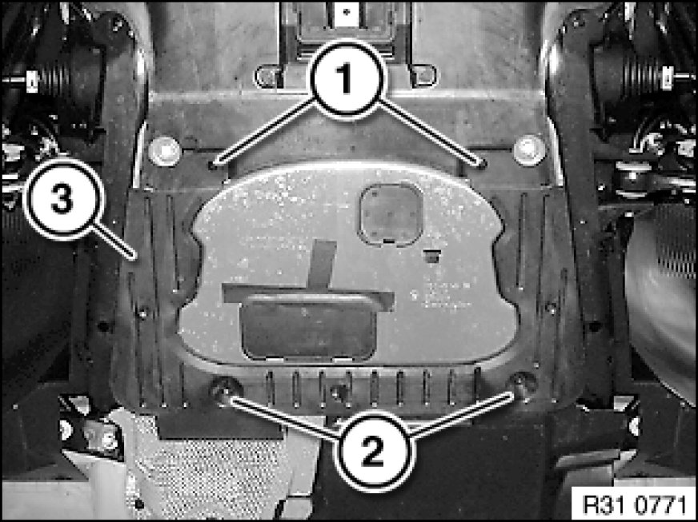
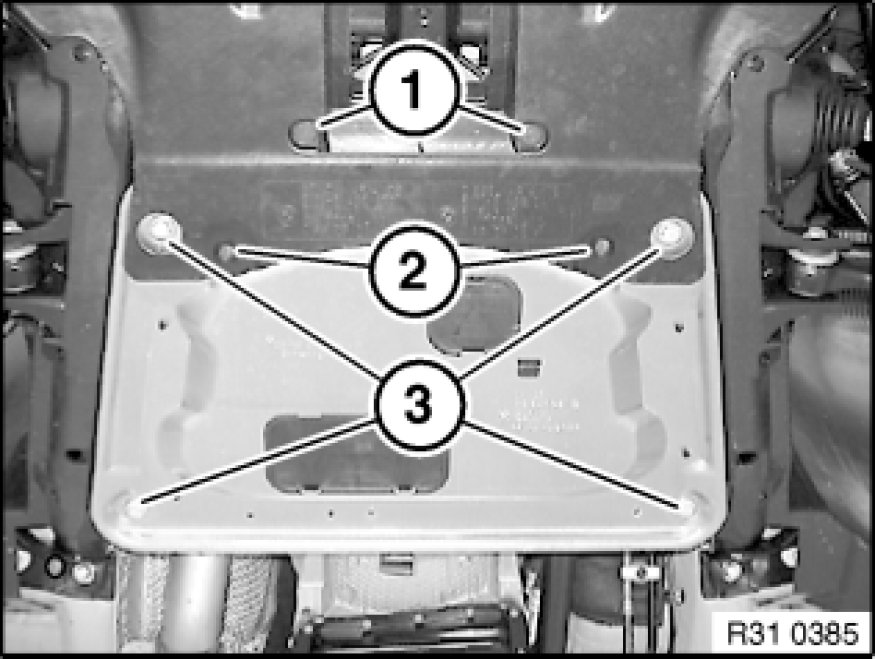

Structural Brace: Service and Repair
31 10 010 - Removing and installing/replacing reinforcement plate

Important!
Observe safety instructions 00 .. ... Lifting Vehicle With A Lifting Platform for raising the vehicle
Driving without reinforcement plate is not permitted!

If necessary, release expander rivet (1).
If necessary, release screws (2) and remove cover (3).

If necessary, release screws (1).
If necessary, release expander rivet (2).
If necessary, remove rear assembly underside protection Removing and Installing/Replacing Rear Underbody Protection or shield on reinforcement plate.
Release screws (3).
Remove reinforcement plate.
Installation Note:
Replace screws.
Tightening torque 31 10 9AZ Front Axle Suspension.

Replacement:
- If necessary, modify absorber, cover, cover with absorber and air routing duct